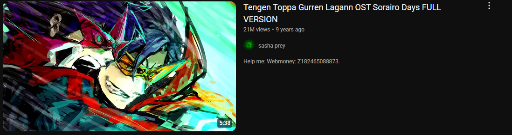

My Hobbies
When I am having leisure time I will do something that I am interested to, Here are some of thing that I do during my leisure times!!!:
BOWLING
🳠Why I Love Bowling Bowling is more than just a game for me—it's a fun and relaxing way to spend time with friends and challenge myself. I love the feeling of focus and precision every time I aim for a strike. It helps me release stress and improves my concentration and coordination. Whether I’m playing for fun or trying to beat my own high score, bowling always gives me a sense of excitement and achievement especially I'm trying my best to hook and curve while throwing until i can't even throw a straight ball!!!, due to much of hook and curve learning making me forgot how to throw it straight. From years to years my skill in bowling is getting better but most of the case is depend on the lane itself as if the lane is too dry or too oily will affect my performance drastically, Overall i love bowling soooooooo muchhhhhhhhhhhh!!!!!.
Playing Video Games
🮠Why I Love Playing Video Games Video games have always been a big part of my life. They’re not just for entertainment, but also a way for me to relax, socialize, and test my strategic thinking. Each game I play gives me a different kind of experience.
🱠The Battle Cats
The Battle Cats may look cute and silly, but behind its quirky graphics is a tower defense game that requires real strategy and timing. I enjoy collecting and upgrading unique cat units, planning lineups, and facing all kinds of crazy enemies. It's a fun way to challenge my brain while still enjoying the humor and creativity of the game. This game even having a lot of collaboration with various types of anime such as, Evangelion, Madoka, and Hatsune Miku!!! I love The battle cat as I am a cat lover myself :3
⚔️ Mobile Legends
Mobile Legends is my favorite MOBA game. I love the thrill of team battles, choosing my favorite heroes like Tigreal, Fredrinn and Lylia, and coming up with strategies to defeat the enemy. It helps me build communication skills, teamwork, and decision-making under pressure—especially during intense ranked matches. Plus, it’s always more fun when I play with friends!
🔫 PUBG
PUBG is all about survival, reflexes, and smart decisions. I love the adrenaline rush of jumping out of the plane, looting, and trying to be the last one standing. It improves my reaction time, map awareness, and tactical thinking. Every match is unpredictable, which makes it even more exciting. Not to forget that playing with friends is what make it fun and enjoyable, dying, trolling and clutching. its very fun!!!!!!!
🕹️ Final Thought Gaming isn’t just a hobby for me—it's a way to connect with others, learn, and enjoy challenges in different virtual worlds. Whether I’m commanding cats, battling in an arena, or surviving on an island, I always find something to learn and enjoy.
MUSIC
🵠Why I Love Music Music isn’t just a background noise in my life — it’s my escape, my story, and sometimes my only way to express what I feel when words fail me. Every song I listen to holds a memory, a mood, or a meaning. My playlist isn’t about trends, it’s about feelings — from loneliness to love, chaos to calm. When I need that cool, classic vibe, I go for Arctic Monkeys — especially "505" and "Party Anthem" — their sound makes me feel like I’m somewhere else, like I’m starring in my own movie. Then comes Gorillaz’s "On Melancholy Hill", a song that just softens the world around me, letting me breathe. There’s something raw and rebellious in Green Day’s "Viva La Gloria (Little Girl)" that keeps me going when I feel lost. The Weeknd’s "Tough Love" hits right when life turns complicated, with lyrics that feel like they were pulled straight from my heart. My playlist isn’t complete without Indonesian gems like "Aku Dah Lupa" and "Garam atau Madu" — the kind of songs that make you close your eyes and feel everything in silence. I also listen to Afghan songs, even if I don’t understand every word — because music doesn’t need translation when it speaks through emotion. And then there’s Masdo’s "Benar Kata Orang Dahulu" — a retro Malay vibe that blends feelings of nostalgia and truth, making me reflect on life, choices, and people. Hyper Act’s "Igauan Malam" gives me goosebumps every time, especially when I’m feeling a little broken inside. From Korea, LeeHi’s "My Only One" is a quiet masterpiece, full of longing and pure feeling. Meanwhile, Dynamic Duo’s "Eya O Eyao" gives me energy, and reminds me of how fun life can be, even if only for a moment. Also D4VD Feel it where this song is one of the song for my favourite show called "Invincible" it's really relaxed to hear that song especially in a warm weather!!! Sometimes, I find beauty in unexpected places—like that Chinese song by a female singer, or the J-pop anthem "Sorairo Days" from Tengen Toppa Gurren Lagann. It gives me strength. That kind of song makes you feel like you can do anything, like you’re the main character who’s about to rise no matter how many times you fall. There is more actually which hard rock metal etc but i think its enough for now HAHAHAHAHAH my taste is multiverse!!!!!!!!!


🧠Music Is My Mirror
In the end, music is where I go to feel seen. It lifts me, breaks me, heals me, and reminds me that I’m alive. Each song, no matter the language, holds a piece of who I am. That’s why music isn’t just a hobby — it’s my mirror.